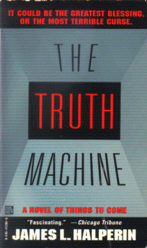

The Truth Machineby James Halperin
publisher: Del Rey
Fiction, 394 pages | 
(book cover art, Copyright ©1996 James Halperin)
Used with Permission. |
Return to the Book MenuPrevious|Next
Description:
In the near future, a national challenge is put forth: the creation of an unbeatable lie detector: the ultimate truth machine. As one team comes forth with a working machine, only one obstacle remains: the president of the company must pass his own machine...
Recommended for:future lawyers, politicians, doctors, people interested in sci-fi that stays on earth.
Did-you-read questions:
Deadline: February 1, 2005.
These should be easy questions, but you should have the questions ready and keep an eye out during your reading. Each question should be answered with 1-2 sentences.
Note: these questions are not probably not the most important part of the book! Your essay will not have to cover these questions!
- What childhood event traumatizes Randall Armstrong?
- What is "Swift and Sure?"
- Where does the code to get past "the fatal glitch" come from?
- What is the International Free Speech Bill?
- What deal is struck between Shaw and Lezar?
Report Questions:Deadline: Peer Review Session on February 8, 2005; paper due February 10, 2005.
You should write a 3 - 4 page essay on one of the following questions. Your essay should include examples and references to the book, unless otherwise specified. Page number references are sufficient for citing material from the primary book. If you use outside materials, cite your sources in full. If you would rather write on a different topic, you may, but clear it with Mr. Howe or Ms. Sullivan first.
- Do you think a truth machine is a desirable thing? Use evidence from the book and from your own perspective to make your case. Should the government make an offer of such a prize?
- In addition to the truth machine itself, the author puts forth some very interesting future political history, including things like world government, swift and sure, and the like. Are these events realistic and/or desirable, given the state of technology described?
- What do you think of IDD? Is it a fair legal option for the courts? Do you think it would be controversial in todays world, or in the future?
- As a consequence of dealing with Scoggins, Armstrong makes some questionable decisions. Do you think he did the right thing? Do you feel that he found justice?
Graphic and Presentation:
Deadline: February 21 - March 3, 2005.You will give a 10 minute presentation on both of the following:
- Convince your peers that they should (or should not) read this book. (This may include a brief summary of the book.) Give examples of what was cool or worthwhile in the book, and what you got out of it (or didn't).
- Describe a (realistic) science idea that you learned about in this book, citing information from at least 2 external sources (other than the dictionary). If you would like help choosing or understanding an idea from your book, you are invited to come talk to Mr. Howe or Ms. Sullivan.
Note: This presentation should not be just a reading of your paper!Along with this presentation, you should have a graphic that will go with it. A Power Point presentation is recommended, but if you have a special idea for a something else, such as a model, an original video presentation, or a well done drawing/ painting/ sculpture/ etc., you may do so, provided it involves a similar level of effort and polish. Speak to Mr. Howe or Ms. Sullivan first if you are considering an alternate graphic format to the Power Point.
Return to the Book MenuPrevious|Next